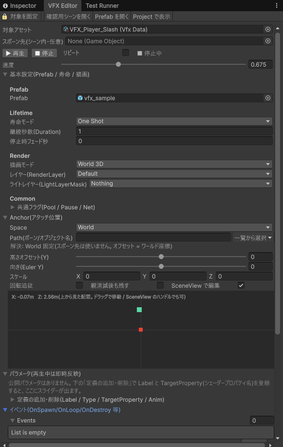

VFX Editor は、エフェクト（VFX）をゲームを実行せずにその場で再生しながら調整するウィンドウです。できること:
Tools > D-Drive > Editors > VFX
| ボタン | 説明 |
|---|---|
| 🔒 対象を固定 | ON にすると、Project ウィンドウで別のものを選んでも対象が切り替わりません。他のアセットを見ながら 1 つを調整したいときに。 |
| 確認用シーンを開く | VFX 確認用シーンを開く（無ければ生成）。ライト・カメラ・ポストプロセス・床が入っています。 |
| Prefab を開く | 対象 VFX の Prefab をプレハブモードで開きます。ParticleSystem そのものを編集したいときに（下の「Prefab の中で再生する」参照）。 |
| Project で表示 | 対象アセットを Project ウィンドウでハイライト。 |
「スポーン先」に、シーン内のキャラクターや AnchorRig を入れると、Anchor で指定したボーン名などをその中から探してそこに出します。空のままなら、Anchor のオフセットがそのままワールド座標になります。
| 操作 | 説明 |
|---|---|
| ▶ 再生 / ■ 停止 | ゲームを実行せずにその場で再生。SceneView を見てください。Hierarchy には「[D-Drive] VFX Preview」という一時的な入れ物が現れ、その下にエフェクトが出ます（シーンには保存されません）。Anchor に生成ディレイを設定した VFX も、遅れて出た分がこの入れ物にまとめられ、■ 停止でちゃんと消えます。 |
| ⏸ 一時停止 | 出ている粒子が止まります。「止める」指示のあとのフェードアウト（Fade Out Sec）の残り時間も一緒に止まります。再開すると残っている粒子の動きだけ戻り、新しい粒子の放出は再開しません。 |
| リピート | ON にすると、1 回で終わるエフェクト（OneShot / Duration）が終わるたびに自動でもう一度出ます。何度も ▶ を押さずに調整できます。ずっと出続けるエフェクト（Loop）には関係ありません。 |
| 速度 | 再生速度（0.1〜2 倍）。ゆっくりにして細部を見る、速くして全体の印象を見る、といった使い方。データには保存されません。 |
| ステータス | 「● 再生中」「■ 停止中」の表示。 |
VFX データの主要な項目をこのウィンドウ内で直接編集できます。項目の意味は VFX の設定項目 を見てください。Prefab を差し替えると、再生中なら自動で新しい Prefab に出直します。
欄の先頭の「Anchor アセット」に Anchor データを入れると、そちらが優先され、下の埋め込み欄は畳まれます（位置の調整は「AnchorEditor で開く」から）。「埋め込みをアセット化」で今の設定から Anchor データを作ることもできます。以下は埋め込み欄の説明です。
「エフェクトをどこに出すか」を決めます。再生中に動かすと、出ているエフェクトがその場で動きます（停止→再生の押し直しは不要）。
| 項目 | 説明 |
|---|---|
| Space | 基準の決め方。World=固定座標 / BoneName・NamedObject=スポーン先の中から Path の名前を探す / ContextTarget=スポーン先そのもの。 |
| Path（ボーン/オブジェクト名） | 探す名前。手入力せず、右の「一覧から選択」を使ってください。スポーン先の中にあるボーン・オブジェクトが一覧で出ます。★ 付きは AnchorPoint（アンカー専用の目印）です。選ぶと Space も自動で切り替わります。 |
| 解決: ✓ / ⚠ | 今の設定で基準が見つかっているかの表示。「⚠ … が見つかりません」なら名前を確認、「⚠ スポーン先が未指定」なら上の「スポーン先」を設定してください。 |
| 高さオフセット(Y) / 向き(Euler Y) | 基準からの高さと向き。スライダーで動かすとその場で反映。 |
| 2D パッド | 上から見た前後左右（X/Z）のずれ。四角の中をドラッグ。 |
| スケール | エフェクト全体の大きさ倍率。(0,0,0) は 1 扱い。 |
| 回転追従 | ON にすると、基準（ボーンなど）が回転したときにエフェクトも一緒に回ります。 |
| 親消滅後も残す | ON にすると、基準のキャラクターが消えてもエフェクトはその場に残って最後まで再生されます（斬撃の軌跡など）。 |
| SceneView 表示 | ON にすると SceneView のエフェクト位置に目印が出て、このウィンドウを最後にクリックしていれば移動ハンドル（矢印）も出ます。ドラッグで直接動かせ、値はこのウィンドウに戻ってきます。回転ツール（E キー）に切り替えると回転ハンドルになります。OFF にすると何も描きません。Anchor Editor など他の D-Drive ウィンドウも開いているときは、最後にクリックしたウィンドウだけがハンドルを出し、他は薄い目印だけになります（下の「SceneView: …が描画中」の案内で確認できます）。 |
VFX データで「公開」した項目（色・サイズなど）が並びます。再生中に変えると出ているエフェクトにその場で反映されるので、色味の調整に便利です。ここで変えた値はデータの既定値として保存されます。
「定義の追加・削除」を開くと、公開する項目そのものを増やせます。Label（表示名）・Type（色 / 数値 など）・TargetProperty（マテリアルのプロパティ名。例: _BaseColor）を設定します。プロパティ名が Prefab のマテリアルに無いと「検証」に赤い表示が出ます。
「エフェクトが出た瞬間に効果音を鳴らす」など、エフェクトに連動する動作を設定します。OnSpawn（出た瞬間）/ OnLoop（ループ 1 周ごと）/ OnDestroy（消えたとき）などのタイミングを選び、鳴らす SE などを指定します。
「打撃 + 火花 + 煙」のように、いくつかのエフェクトを重ねたときの見え方を確認します。空欄に VFX データを入れて各行の ▶ を押すと同時に出ます。■ で個別に止められます（最大 8 つ）。
対象データの設定ミスをその場でチェックした結果です。Error（赤）は直さないと正しく動きません。Warning（黄）は確認推奨。設定を変えると自動で更新されます。
ParticleSystem の細かい設定（放出数・寿命・色のカーブなど）は Prefab の中で編集します。その作業中も、このウィンドウの再生機能がそのまま使えます。
| 表示 | 意味と対処 |
|---|---|
| Prefab が未設定(または Missing)です | 再生する実体が無い状態。基本設定の Prefab にエフェクトの Prefab を入れてください。 |
| マテリアル '…' のシェーダー '…' は Built-in Render Pipeline 用ですが、プロジェクトは URP です | 古い（Built-in 用）シェーダーのマテリアルは URP では透明になって見えません。Tools > D-Drive > Generate > デフォルトパーティクルマテリアルを生成 で URP 用のマテリアルを作り、Prefab の ParticleSystem Renderer に設定してください。 |
| Params '…' の TargetProperty '…' が Prefab のマテリアルに存在しません | 公開パラメータのプロパティ名が間違っています。マテリアルの Inspector でプロパティ名（_BaseColor など）を確認して合わせてください。 |
| LifeMode=Loop ですが Pool 上限が未設定です | ずっと出続けるエフェクトが際限なく増える危険があります。プログラマーに相談してください。 |
| 解決: ⚠ '…' が見つかりません | Anchor の Path の名前がスポーン先の中にありません。「一覧から選択」で選び直してください。 |
| 開いているシーンにカメラ・ライトがありません | ツールバーの「確認用シーンを開く」を押してください。 |